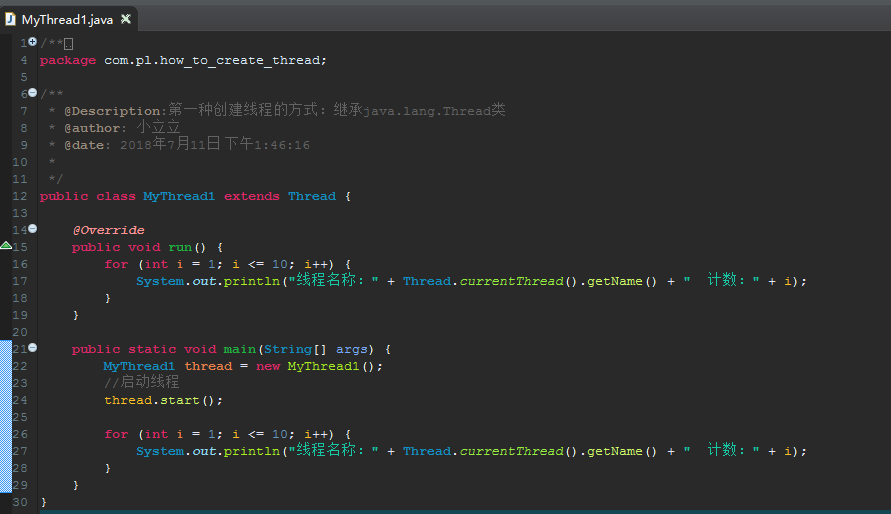
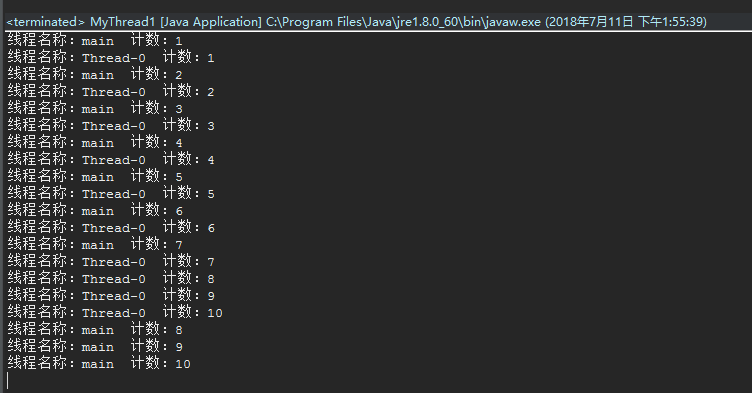
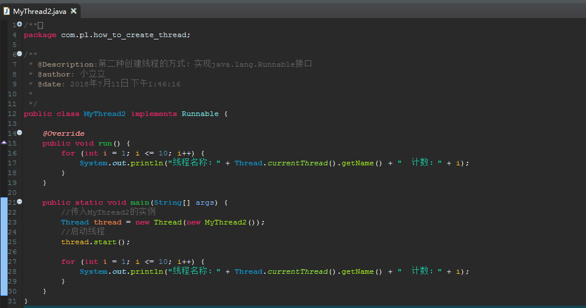
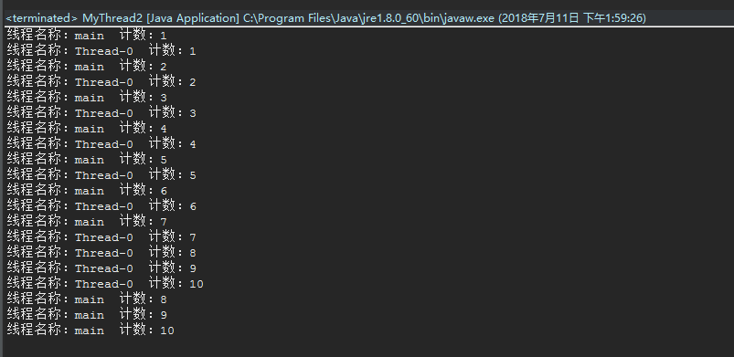
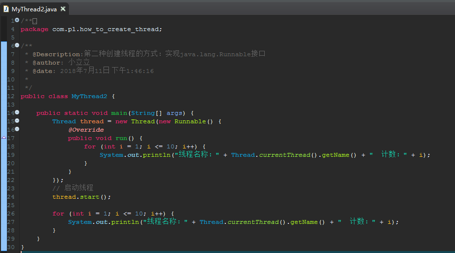

第一种方式：继承java.lang.Thread
具体步骤：
第一步：创建一个类继承java.lang.Thread
第二步：重写父类的run方法
第三步：创建类的实例
第四步：调用start方法开启线程
样例如下：


第二种方式（推荐）：实现java.lang.Runnable接口
如果使用继承Thread的方式来创建线程，那么就不能够再继承其它类了（Java的单继承特性决定），这样就不灵活。所以推荐用实现Runnable接口的方式来创建线程。
具体步骤：
第一步：创建一个类实现java.lang.Runnable接口
第二步：实现接口的run方法
第三步：创建类的实例
第四步：创建一个java.lang.Thread类的实例（传入上一步类的实例作为构造方法的参数）
第五步：调用start方法开启线程
标准样例如下：


或者用更简略的方式如下：

第三种方式：